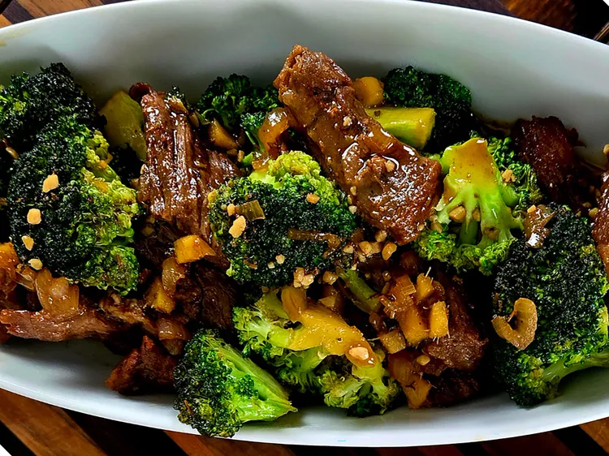

STEAK AND BROCCOLI STIR FRY

INGREDIENTS
- 2 tablespoon grape seed oil or other cooking oil
- 1 pound ribeye steak, cut into bite-sized pieces
- salt and freshly ground black pepper to taste
- 1 cups soy sauce, or more as needed
- 1/2 cup honey
- 1/4 cup sesame oil
- 4 garlic cloves, chopped
- 2 tablespoons fresh ginger, chopped
- 1 shallot, chopped
- 1 1/2 cups fresh broccoli florets
- 2 green onions, chopped, for garnish
STEPS
- Heat grape seed oil in a cast iron skillet over medium heat.
Season steak with salt and pepper.
- Add steak to skillet and cook for 1 to 2 minutes on each side.
Remove from heat and set aside.
- Whisk soy sauce, honey, sesame oil, garlic, ginger, and shallot together in a bowl.
Pour sauce into the skillet and bring to a gentle simmer.
Add broccoli and cook for 2 minutes.
- Add steak back into the skillet; cook until hot, 1 to 2 minutes.
Sprinkle with chopped green onions to serve.